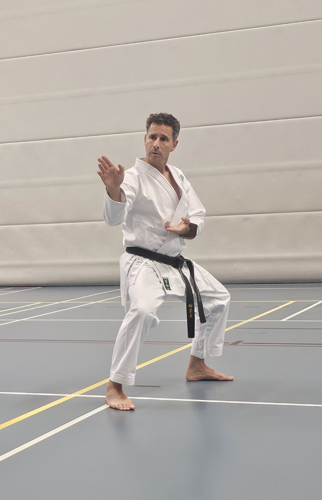
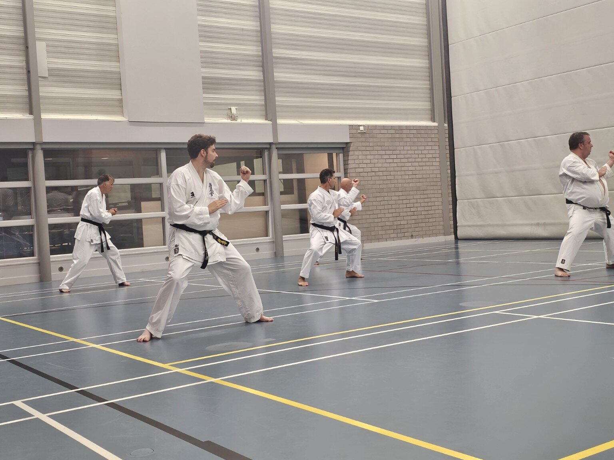
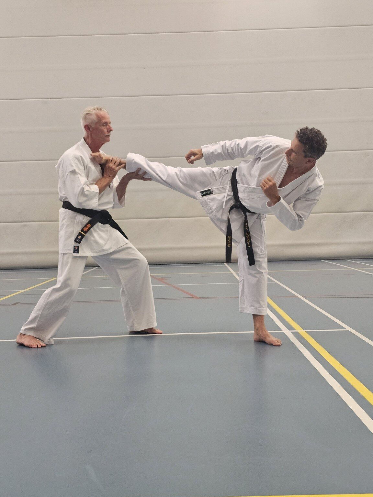
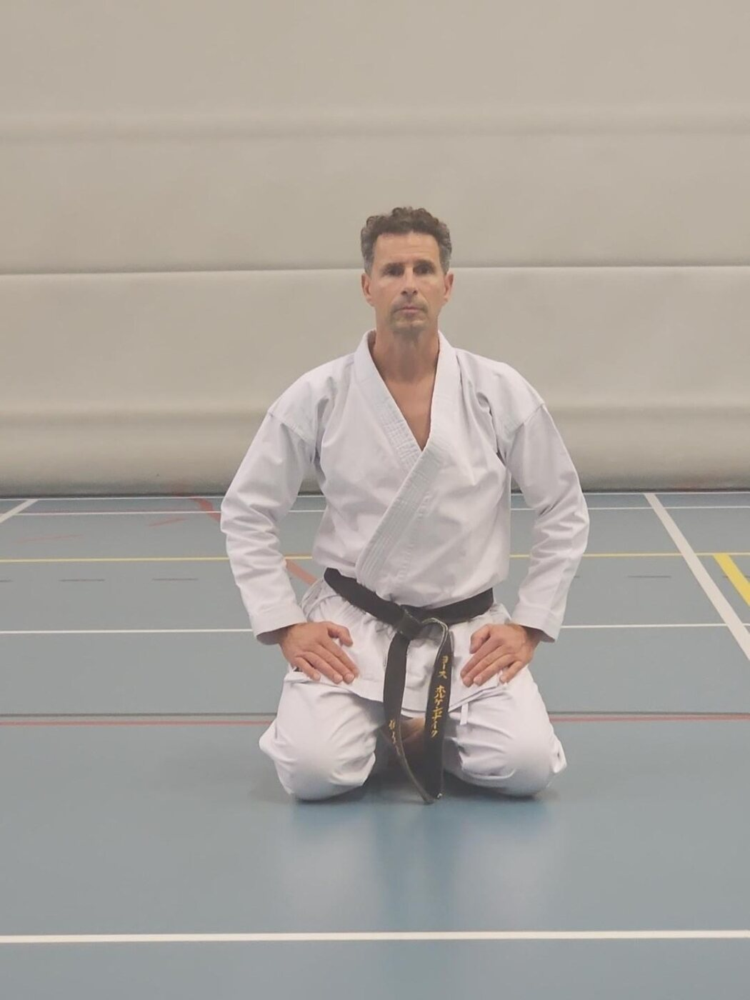

01
Techniek
Elke beweging begint bij houding en timing. Je bouwt stap voor stap aan technieken die kloppen — niet alleen aanvoelen, maar ook werken.
Karate voor jongvolwassenen en volwassenen
Techniek, kracht en mentale rust in een training die met je meegroeit — onder persoonlijke begeleiding van hoofdtrainer Jos Hoekendijk.

De gedachte achter Mizu
Het Japanse woord voor water is mizu. Water buigt mee, blijft in beweging en is tegelijk niet te breken. Dat vertaalt zich direct naar de mat: ontspannen bewegen tot het moment dat kracht nodig is, en dan zonder aarzelen toeslaan.
De training
Techniek geeft je de basis, conditie het uithoudingsvermogen, kumite het inzicht om ze allebei te gebruiken.
Elke beweging begint bij houding en timing. Je bouwt stap voor stap aan technieken die kloppen — niet alleen aanvoelen, maar ook werken.

Karate vraagt om een lichaam dat meegaat: kracht, souplesse en adem die een volle training volhoudt, opgebouwd in jouw tempo.

In gecontroleerde partneroefeningen leer je afstand inschatten, tempo lezen en onder druk kalm blijven — techniek en conditie samengebracht.
Visie
Bij Mizu Dojo train je niet alleen je lichaam. Je leert wanneer je moet aanpassen en wanneer je moet doorzetten — een vaardigheid die verder reikt dan de dojo.

Eigenaar & hoofdtrainer
Jos begeleidt elke karateka persoonlijk — van de eerste stand tot de fijnste details in techniek. Duidelijk waar het moet, geduldig waar het kan, en aanspreekbaar voor beginners én gevorderden. Na jarenlang lesgeven bij karateschool Shin Bu Ken in Lemmer start hij nu zijn eigen school in Emmeloord: Mizu Dojo.
Kyokushinkai-karate, 1e dan (Shodan) — aanspreektitel Senpei. Lerarenopleiding van de Karate-do Bond Nederland (KBN) afgerond, actief als leraar bij karateschool Shin Bu Ken Lemmer. 40 jaar karate-ervaring.
Kennismaken
Een proefles laat precies zien hoe een training aanvoelt: de groep, de begeleiding en het tempo. Geen inschrijving nodig om een keer te komen kijken.
Vraag een gratis proefles aan